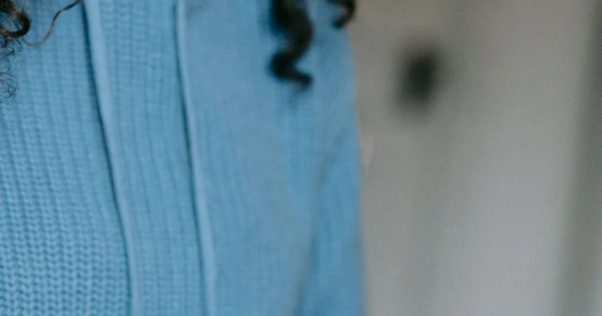
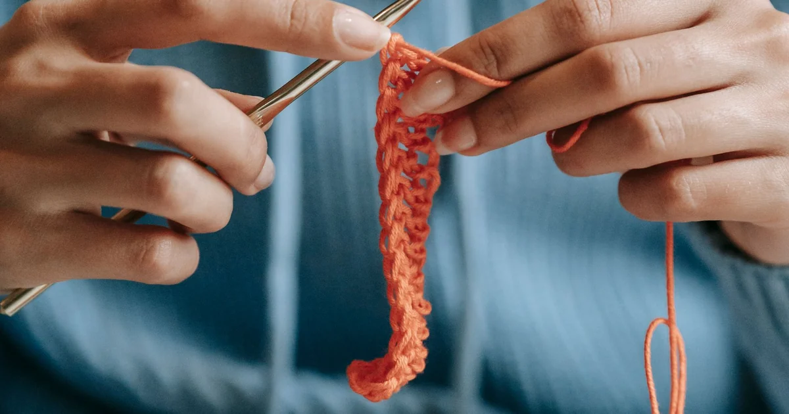

Patterns & TroubleshootingHow to Read a Crochet Pattern Step by Step
Read a written crochet pattern from its materials and notes through the row instructions, checking abbreviations before you start.
Browse category
Explore clear, beginner-friendly crochet tutorials in patterns & troubleshooting. Start with the basics, practice at your own pace, and follow the linked guides whenever you need another explanation.

Patterns & TroubleshootingRead a written crochet pattern from its materials and notes through the row instructions, checking abbreviations before you start.
 Patterns & Troubleshooting
Patterns & TroubleshootingA crochet chart uses symbols to show stitches and their placement; always read the chart key and starting direction first.
US and UK crochet use different names for several stitches; compare the pattern’s terminology before substituting instructions.
 Patterns & Troubleshooting
Patterns & TroubleshootingA project usually gets wider when stitches are added and narrower when stitches are missed; row counts help locate the change.

Patterns & TroubleshootingWhen a crochet mistake appears, stop at the last correct stitch, identify the problem, and undo only as far as needed.
 Patterns & Troubleshooting
Patterns & TroubleshootingThe first stitch of a new row is usually beside the turning chain, but the pattern determines whether that chain counts as a stitch.
 Patterns & Troubleshooting
Patterns & TroubleshootingBlocking reshapes a finished crochet piece; choose a method only if it suits the fiber and care label.
 Patterns & Troubleshooting
Patterns & TroubleshootingA neat finish secures the active loop, weaves in each tail, and checks seams without pulling the fabric out of shape.